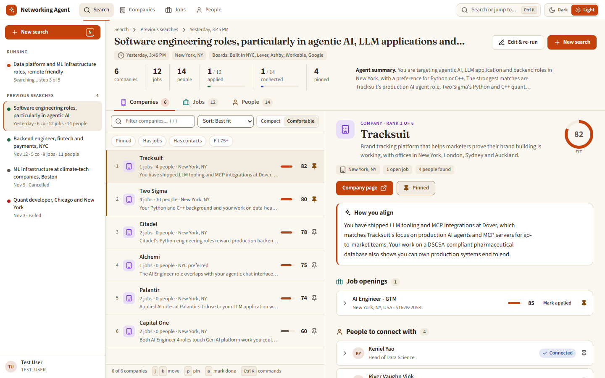
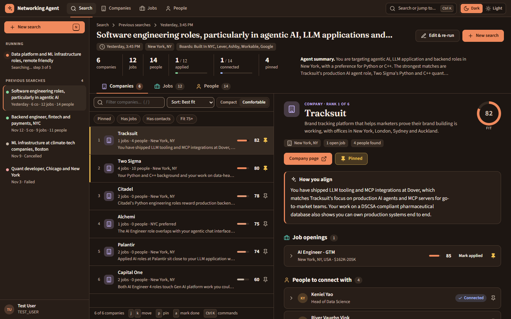

1 · Command · Linen
Command Center layout · Linen palette · warm espresso dark mode
The layout you liked, in the colours you liked: searches on the left, a list in the middle, and a details pane on the right that opens on the top company. Includes keyboard shortcuts and Ctrl+K search.